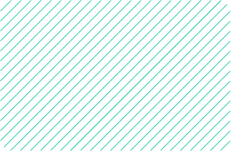

<section class="projects">
  <div class="projects-content">
    <div class="projects-headline-container">
      <h2 class="karla">Portfolio</h2>
      <h1 class="fira-code">Meine Projekte</h1>
      <div class="description-container">
        <p class="karla">
          Sehen Sie sich eine Auswahl meiner Arbeit an - interagieren Sie <br />
          mit Projekten um meine Fähigkeiten in Aktion zu sehen.
        </p>
      </div>
    </div>

    <div class="projects-container">
      <div class="projects-left">
        @for (project of projects; track $index) {
        <div
          class="single-project"
          (click)="openOverlay(project)"
          (mouseenter)="hoveredProject = project; hoveredIndex = $index"
          (mouseleave)="hoveredProject = null"
        >
          @if ($first) {
          <div class="spacer"></div>
          }

          <div class="single-project-content">
            <b class="fira-code">{{ project.name }}</b>

            <div class="project-skills">
              @for (tool of project.tools; track tool.name) {
              <p class="karla">{{ tool.name }}</p>
              @if (! $last) {
              <div class="skill-spacer"></div>
              } }
            </div>
          </div>

          <div class="spacer"></div>
        </div>
        }
      </div>

      <div class="projects-right">
        @if (hoveredProject) { @switch (hoveredIndex) { @case (0) {
        <div class="project-image-tooltip align-start">
           
        </div>
        } @case (projects.length - 1) {
        <div class="project-image-tooltip align-end">
           
        </div>
        } @default {
        <div class="project-image-tooltip align-center">
           
        </div>
        } } }
      </div>
    </div>
  </div>

<!-- Overlay -->
  
  <!--@if (selectedProject) {
  <div class="overlay" (click)="closeOverlay()">
    <div class="overlay-content" (click)="$event.stopPropagation()">
      <button class="close-btn" (click)="closeOverlay()">✖</button>

      <h1> {{selectedProject.number}} </h1>
      <h2>{{ selectedProject.name }}</h2>
      <p class="description">{{ selectedProject.description }}</p>

      <div class="overlay-tools">
        @for (tool of selectedProject.tools; track tool.name) {
          <div class="tool">
            @if (tool.icon) {
              
            }
            <span>{{ tool.name }}</span>
          </div>
        }
      </div>

      

    
        <a class="overlay-link" [href]="selectedProject.link" target="_blank">Live-Demo öffnen</a>
      
    </div>
  </div>
}-->


</section>
